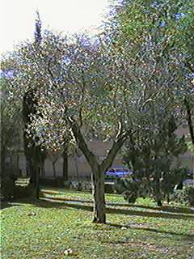
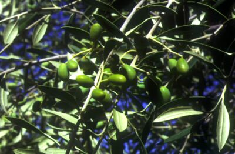

| Olea europaea L., Sp. Pl. 8 (1753) |
Oleáceas |
| Olivo
(cultivado),
acebuche (silvestre) |
Árbol perennifolio |
|
Árbol perennifolio,
monoico, a veces algo espinoso, de 4 m de altura aproximadamente [puede
alcanzar los 10 m], tronco de unos 40 cm
de diámetro, corteza grisácea y muy fisurada.
Hojas
simples,
opuestas,
cortamente pecioladas; lámina de 1,5-6 cm x 5-15 mm, oblonga,
lanceolada u oblanceolada, entera, con el margen algo revoluto,
de base atenuada y ápice agudo, coriácea,
de color verde intenso en el haz y gris plateado en el envés,
por
la presencia de pelos microscópicos en forma de escamas peltadas.
Inflorescencia
en
forma de racimos axilares de 2’5-5 cm.
Fruto
carnoso,
de tipo
drupa, de 1-3’5 cm, ovoide, verde al principio y negro en la madurez.
Florece de Abril a Junio.
La variedad sylvestris
DC.
es el acebuche, arbusto característico de la vegetación
de las zonas cálidas y acillosas de la Región
Mediterránea.
|
 Foto: Carlos Romero Zarco, Nov. 2002 |
 Foto: Pedro Romero Zarco, Dic. 2002 |
Observaciones.-
Olea,
proviene del latín oleum (aceite);
europaea, alude a su
procedencia, aunque posiblemente las variedades originales del olivo
surgieron en la zona mediterránea de Asia.
Mitología |
| Área de Origen.- La especie en conjunto es de origen Mediterráneo y Macaronésico (islas atlánticas). Los fenicios difundieron el olivo cultivado por las islas griegas y la Península Helénica. Los romanos prosiguieron la expansión del olivo por el Mediterráneo, según iban conquistando territorios. El olivo llegó a España con los fenicios hacia el año 1050 a. C., pero fueron los romanos los que llenaron la Península Ibérica de olivos, convirtiéndola en la principal región exportadora de aceite de oliva. Con la llegada de los árabes se introdujeron nuevas variedades, sobre todo en el sur de la Península Ibérica. | |
| Uso en el campus.- Como
árbol ornamental, sobre césped. El olivo de la parte
central del Campus estuvo originalmente en el antiguo jardín
experimental del Departamento de Botánica, en el solar que hoy
ocupa el Edificio Rojo, donde fue plantado en los años 70. |
Localización.- |
|
©
Autores de esta ficha:
|
|